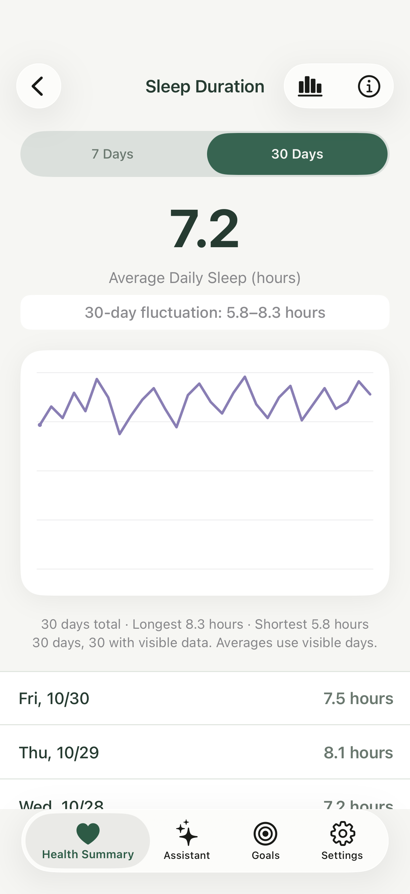
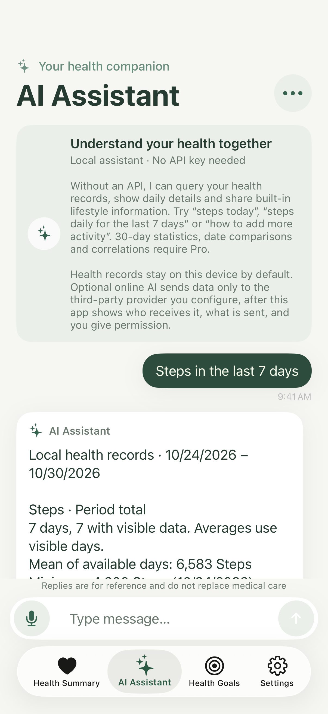

Start free
No API key and no subscription. Summary, 7-day trends, basic local questions, built-in information and one goal.
Download free. Buy Pro in the app when you want a longer window and more goals. Version 1.2.0 is live.
No API key and no subscription. Summary, 7-day trends, basic local questions, built-in information and one goal.
CNY 38 historical China reference price
Non-consumable IAP, product ID com.vitagauge.pro.lifetime. The reference price does not imply local availability. Apple shows availability and the actual local price. The purchase does not include model credits.
| Feature | Free | One-time Pro |
|---|---|---|
| Health summary and 16 metrics | Included | Included |
| 7-day trends and basic local queries | Included | Included |
| Built-in lifestyle information and help | Included | Included |
| Widgets and paired Apple Watch summary | Included | Included |
| Native iPad layouts | Included | Included |
| Health goals | 1 | Multiple |
| 30-day trends and statistics | No | Included |
| Date comparisons and correlations | No | Included |
| Online AI with your own API key | No | Included; provider fees separate |
No automatic renewal. Family Sharing is off. Restore with the original Apple Account. Free features stay available without buying.




Local: rules, built-in notes and deterministic math. No API call and no model download.
API: shows the provider text or an error. It does not fall back to a local answer.
Local + API: simple queries stay on-device; open-ended text uses the provider. Online parts still need Pro, your key and recipient consent.
The offline assistant supports recent 1 to 30 day windows and explicit dates. Longer windows, date comparisons and correlations need Pro. Correlation needs at least 7 finished paired days with variation in both series; it is not causation. Missing data is not zero. Body temperature is the body-temperature type, not sleep wrist temperature. The two blood-pressure readings are not joined across time into one measurement. Sleep is split by calendar day. AI replies do not replace care.
Version 1.2.0 is available on the App Store. The main app supports iPhone on iOS 15+ and native iPad layouts; reading Apple Health on iPad requires iPadOS 17+ and authorization on that device. The update improves landscape, narrow windows and larger text, and adds Home Screen widget sizes and an inline Lock Screen style. The paired Apple Watch app, complications and Smart Stack widgets require watchOS 10+ and a compatible iPhone. Widgets require iOS / iPadOS 17+. The watch shows five metrics last synced from the phone; it does not independently read HealthKit, call AI or monitor health in real time.
Download and purchase availability depend on your Apple Account country or region and the local App Store.
Version 1.2.0 production views with synthetic data. Watch shows the paired iPhone’s latest synced summary.


VitaGauge organizes health records for everyday self-management. It is not a medical device and does not provide diagnoses, prescriptions or emergency monitoring. Correlation does not establish causation. Consult a qualified health professional before making medical decisions.